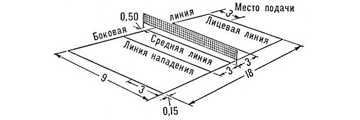
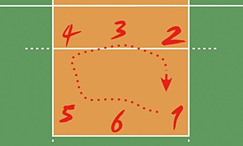

- Играют две команды, каждая состоит из 6-и человек (3 – атакующая линия, 3 – линия защиты).
- За один розыгрыш команде разрешается касаться мяча только 3 раза (блокирование не считается касанием).
- Запрещается ловить, бросать или удерживать мяч.
- Игрок не может дважды касаться мяча (блок не считается).
- Переход игроков осуществляется по часовой стрелке. Переходить (изменять позиции) команда должна после того, как вначале очко набрал соперник, а затем ваша сторона.
- В волейболе 3 партии, каждая играется до 25 очков (для победы в партии должна быть разница в 2 очка, если счёт 24:24, то матч продолжается до тех пор, пока не будет необходимая двух очковая разница).
- Каждая команда в каждой партии имеет право взять 2 тайм-аута длительностью 30 секунд каждый.
- Игрокам задней линии запрещается атаковать из зоны атаки (3-х метровая линия). Если волейболисты задней линии хотят выполнить нападающий удар, то они должны совершить прыжок до 3-х метровой линий, не заступив за неё).
- Допускается контакт мяча с любой частью тела игрока (ответ для многих интересующихся – ногой в волейболе играть можно).
- Если двое и более игроков дотрагиваются до мяча одновременно – это считается одним касанием.
- После подачи, игроки передней линии могут меняться позициями между собой.
- На подачу даётся 8 секунд с момента свистка судьи.
- Подача совершается только одной рукой.
- В каждой партии команде разрешено сделать максимум 6 замен (одновременно можно заменять сразу нескольких исполнителей).
Это были перечислены основные правила волейбола, а теперь разберёмся в главных аспектах игры более подробно.
Ознакомьтесь с удивительной историей волейбола
В чём заключается суть волейбола?
Цель волейбола состоит в том, чтобы перевести мяч с помощью рук через сетку на половину поля соперника, пытаясь заставить круглого дотронуться площадки или отскочить за пределы поля от любой части игрока-противника. В то время, команда-оппонент должна предотвратить попадание мяча на своей половине площадки.
Правила волейбола запрещают игрокам дважды бить по мячу. Обычно команда пытается организовать атаку тремя касаниями: первое – приём и одновременная передача на связующего (тот, который стоит под сеткой – зона 3), второе – передача на атакующего, третье – удар.
Победа достаётся тому коллективу, который выиграл больше партий (всего играется от 3-х до 5-и сетов в зависимости от турнира).
Команды, площадка и технические аспекты
Одновременно на площадке должно находиться по 6 игроков. Замены разрешается использовать на протяжении всего матча, однако в одной партии (сете) тренер может сделать максимум 6 замен.
Каждый игрок занимает свою позицию, в зоне атаки (рядом с сеткой) или в зоне защиты (задняя часть площадки за трёхметровой линией). По правилам в волейболе существует 6 зон, каждая имеет свой номер (смотрите на картинке ниже). Переход игроков осуществляется по часовой стрелке.
